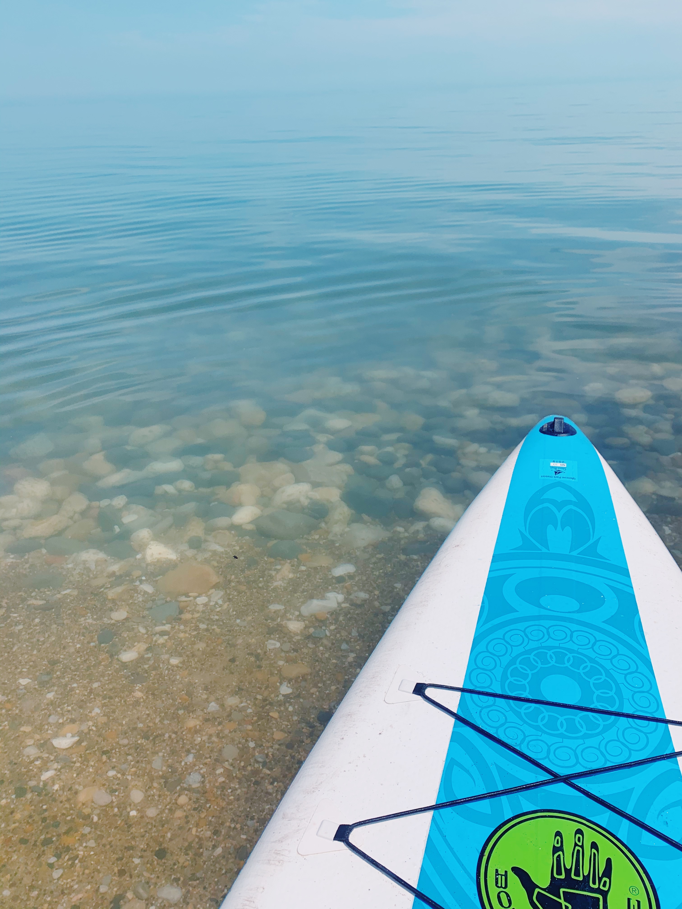
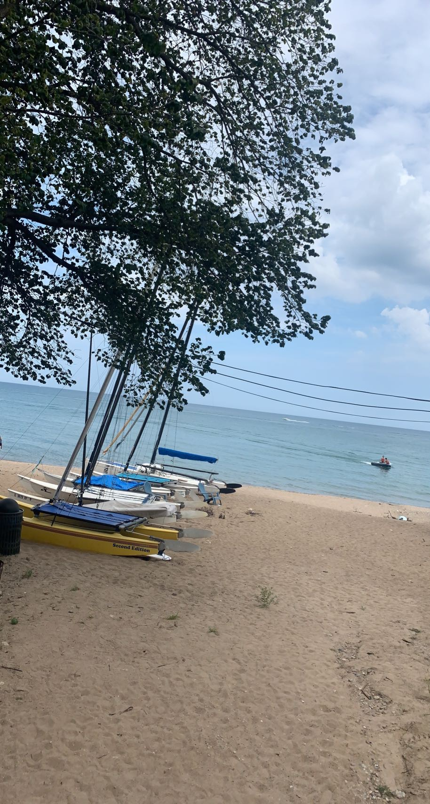
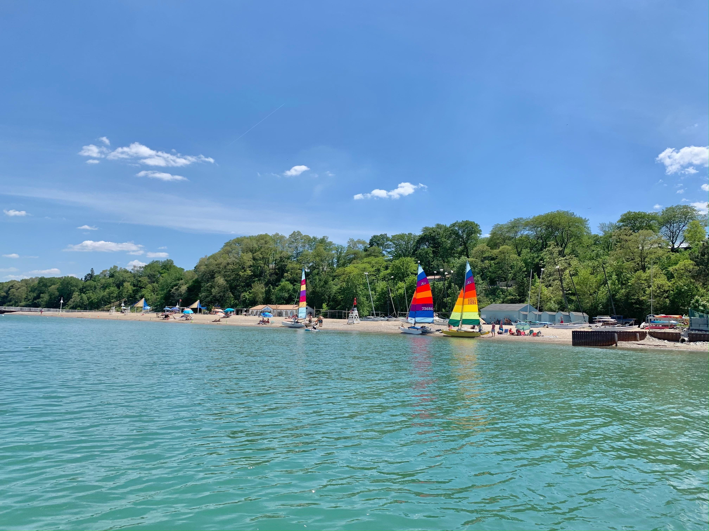

<!DOCTYPE html>
<html lang="en"></html>
<head></head>
<title>Waterfront Activities</title>
<body>
    <header>
        <nav>
            <ul>
                <li><a href = "index.html" >Explore</a> </li>
                <li class="active"></li> <a href="waterfront.html">Waterfront Activities</a></li>
                <li> <a href="trails.html"></a></li>
                <li> <a href="shopping.html"></a></li>
                <li> <a href="restaurants.html"></a></li>
                <li> <a href="desserts.html"></a></li>
                <li> <a href="coffee.html"></a></li>
            </ul>
        </nav>
    </header>
    <p>
        Glencoe Park District is home to Lake Michigan's Glencoe Beach. It offers more than just a scenic view of Lake Michigan. It is home to a pier, beach house, sprayground, sun shelters, beach rentals, events and classes, life guards on duty, sand volleyball, 
        and a complimentary beach cart to assist patrons with accessing the beach. Paddle-boards, sailboats, and kayaks are available for daily rental. During the off-season, the beach is open to vistors without a season pass from sunrise-sunset.
        Located at: 999 Green Bay Rd., Glencoe, IL 60062
    </p>
    <p>Skokie Lagoons</p>
    <p>Lake Forest Beach</p>
    
    
    
    
</body>
<h1></h1>